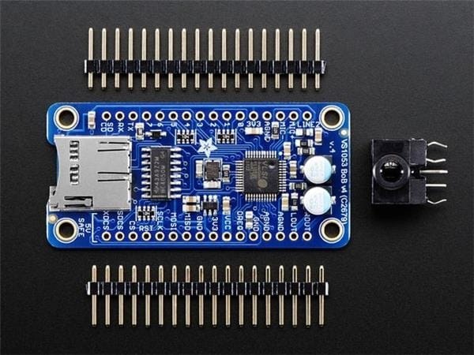

Платы расширения VS1053 Codec + MicroSD Breakou
Платы расширения VS1053 Codec + MicroSD Breakou1381, Audio IC Development Tools VS1053 Codec + MicroSD Breakout - MP3/WAV/MIDI/OGG Play + Record - v4
Adafruit
-------------------------------------------------------------------------------------------------------------------------

------------------------------------------------------------------------------------------------------------------------Семейство VSMD001 — это компактный, высокопроизводительный и простой в использовании аудиоплеер Ogg Vorbis, управляемый через порты ввода-вывода, UART, SPI или USB. Его можно использовать как подключаемую звуковую плату в электронных системах или как отдельный небольшой аудиоплеер. Аудиоконтент может храниться как во встроенном SPI-порту, так и во флеш-памяти или на карте microSD.
Семейство VSMD301 имеет совместимые с семейством VSMD001 выводы питания и аудиовыходы. Функциональность аналогична семейству VSMD001. В нём отсутствует USB-интерфейс, как в предыдущем семействе, но есть монофонический АЦП с микрофонным усилителем для записи или микширования. Семейство VSMD301 использует формат PCM или ADPCM для аудиоконтента. Простой аудиоформат обеспечивает низкую задержку звука и возможность бесшовного зацикливания.
====================================================
VS1053 Codec + MicroSD Breakout - MP3/WAV/MIDI/OGG Play + Record - v2 Эта плата коммутации является идеальным компаньоном для чипа кодека VLSI VS1053B DSP. VS1053 может декодировать широкий спектр аудиоформатов, таких как MP3, AAC, Ogg Vorbis, WMA, MIDI, FLAC, WAV (PCM и ADPCM). Его также можно использовать для записи звука как в PCM (WAV), так и в сжатом Ogg Vorbis. Вы также можете выполнять всевозможные действия с аудио, например, регулировать низкие частоты, высокие частоты и громкость цифровым способом. Также имеется 8 контактов GPIO, которые можно использовать для таких вещей, как включение маленьких светодиодов или чтение кнопок. Вся эта функциональность реализована в легком интерфейсе SPI, поэтому практически любой микроконтроллер может воспроизводить аудио с SD-карты. Также предусмотрен специальный режим MIDI, в котором можно загрузить чип. Он будет считывать «классические» MIDI-данные со скоростью 31250 Кбод через порт UART и работать как синтезатор/драм-машина — в нём есть десятки встроенных эффектов ударных и сэмплов! Но паять чип довольно сложно, и для него требуется множество дополнительных компонентов. Поэтому мы создали лучший разъём, идеально подходящий как для Arduino, так и для других микроконтроллеров, которым не хватает вычислительной мощности для декодирования MP3. Разъём достаточно тонкий, чтобы поместиться на макетной плате, оставив один ряд отверстий для проводов. На плате имеются стабилизаторы напряжения 3,3 В и 1,8 В с ферритовыми кольцами и аналоговой фильтрацией для качественного аналогового выхода. Плата оснащена входом для микрофона, к которому можно подключить линейный вход или микрофон и записывать сжатый звук. Все 8 выводов GPIO разведены и оснащены встроенными потенциометрами с понижением напряжения до 100 кОм. Просто подключите кнопку к выводу GPIO на 3,3 В для подключения с активным высоким уровнем. Вы, вероятно, захотите воспроизводить музыку с карты microSD, поэтому мы добавили держатель на плату. Поскольку мы знаем, что многие наши клиенты используют микроконтроллеры с напряжением 5 В, такие как Arduino, мы сделали все интерфейсные выводы 5-вольтовыми с преобразователями уровня, чтобы вы могли использовать микросхему при напряжении питания/логики 3 В или 5 В! Каждый заказ поставляется с полностью собранной и протестированной платой расширения, 0,1-дюймовым штыревым разъёмом, который можно припаять к разъёму для подключения к макетной плате, и бонусным разъёмом для стереонаушников, который будет удобен, когда вы захотите подключить наушники! Новинка! С 24 сентября 2013 года все заказы будут поставляться с версией v2, которая практически идентична, но теперь имеет блокировочные стереоконденсаторы ёмкостью 220 мкФ на выходе. Это означает, что вы можете подключать к выходу наушники или стереосистему без риска повреждения. По сути, мы интегрировали дополнительные конденсаторы на саму печатную плату, сэкономив вам на проводах и усилиях! Если у вас старая версия v1.0, на которой нет двух больших круглых серебряных конденсаторов, вы можете подключить пару наушников сопротивлением 30 Ом напрямую к выводам LOUT/ROUT, если «земля» подключена к GBUF. Однако это не линейный выход. Если вы хотите подключиться к стереосистеме или активным динамикам с помощью платы v1.0, установите два прилагаемых электролитических конденсатора емкостью 100 мкФ последовательно на контакты LOUT/ROUT между выходом и входом стереосистемы, затем подключите общее заземление к AGND. Если вам нужны только динамики, наша плата стереоусилителя мощностью 3,7 Вт плюс два динамика мощностью 3 Вт и сопротивлением 4 Ом дадут вам мощный гул, и вам не понадобятся дополнительные блокирующие конденсаторы, поскольку усилитель имеет дифференциальные входы. Платы расширения VS1053 Codec + MicroSD Breakou